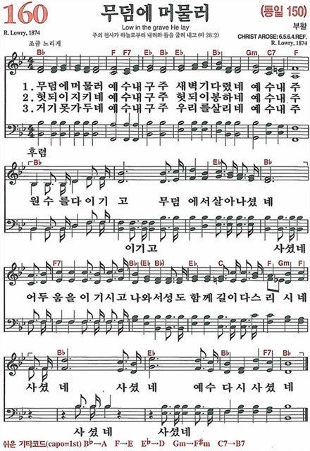

도망치고 배신했던 제자들은 어떻게 목숨을 걸게 되었을까요?
예수님의 복음이 들어가는 곳마다 생명의 역사가 일어나는 이유, 그 해답은 부활에 있습니다.

예수님은 골고다 언덕에서 무기력하고 비참하게 죽었습니다. 대장이 죽었다면 실패한 집단인데, 어떻게 그 당시 사람들에게 하나님의 아들이요 구원자로 받아들여질 수 있었을까요?
체포되자마자 예수님을 배반하고 버리고 도망했던 한심한 제자들. 그들은 무슨 이유로 그토록 강력한 신앙의 소유자가 되어 자신들의 목숨을 바칠 수 있었을까요?
성경은 부활을 꾸며낼 의도가 전혀 없습니다. 제자들이 부활을 믿지 못했다가 믿게 되는 과정을 정직하게 기록합니다.
당시 유대 법정에서 여성의 증언은 법적 효력이 전혀 없었습니다. 만약 부활을 허구로 꾸미려 했다면, 가장 불리한 시나리오입니다. 부활 증거로 여성을 처음 내세운 것은 '그저 일어난 그대로 설명하려고 했다'는 신실한 증언의 명백한 증거입니다.
1세기 유대인들과 로마 군인들조차 "제자들이 훔쳐갔다"고 변명할지언정, 무덤이 비었다는 사실 자체는 인정했습니다. 역사학자 마이클 그랜트 등 대부분의 비평적 학자들도 '빈 무덤'은 부인할 수 없는 역사적 팩트라고 인정합니다.
개인적인 환상이 아닙니다. 엠마오의 두 제자, 열한 사도, 그리고 바울 당시 살아있던 500여 명의 형제들에게 동시에 보이셨습니다. 이렇게 많은 사람들이 집단으로 동시에 환상을 본다는 것은 심리학적으로 불가능합니다.
십자가 앞에서 침묵하고 숨었던 제자들이 오순절 이후 완전히 새로운 사람이 되어 원형극장의 사자 밥이 되고 참수형을 당하면서도 부활을 외쳤습니다. 만약 거짓이었다면, 거짓말에 자신의 목숨을 바칠 사람은 없습니다. 현대 회의주의 학자들도 이 변화만큼은 부활 외에 설명할 길이 없다고 동의합니다.
하나의 역사적 사건이 신화로 발전하려면 최소 두 세대(60년 이상)가 걸립니다. 하지만 신약성경은 예수님 사후 18~60년 이내에 기록되었습니다. 또한 비그리스도인 역사가(요세푸스, 타키투스 등)의 고대 자료들만 17개에 달할 정도로 탁월한 역사성을 갖고 있습니다.
부활은 매우 커다란 의미로 다가오기 때문입니다.
부활을 사실로 믿고 인정하는 순간, 삶의 변화가 필연적이기 때문입니다.
예수님을 창조주요 하나님의 아들로 받아들여야 하며, 그분의 다스림 안으로 들어가야 하는 엄중한 도전이기에, 사람들은 자신의 삶을 유지하고자 부활을 애써 거부하려 합니다.
예수님은 지금도 부활의 주님을 만나기 원하는 분들에게 나타나십니다.
세상 사람은 죽음 앞에 모두 힘이 없지만, 부활하신 주님을 만난 자는 죽음을 넘어섭니다. 더 이상 죽음을 두려워하지 않고 영원한 생명으로 채워집니다.
죽음 이후의 생명을 확신하기에 오늘 하루에 후회가 없어야 함을 느낍니다. 죄를 멀리하고 하루하루를 영원과 잇대어 소중하게 살아갑니다.
부활하신 예수님을 바라보며 영원한 생명에 대한 소망을 매일 채워갑니다. 여러분의 인생에 후회가 없도록, 은혜와 감사만이 가득하기를 소망합니다.
예수님의 제자들조차 처음에는 부활을 의심하고 믿지 못했습니다. 나의 신앙 여정 속에서도 하나님의 말씀이나 기적을 의심했던 적이 있나요? 오늘 살펴본 '부활의 5가지 증거' 중 나의 마음과 이성을 가장 크게 두드린 증거는 무엇입니까?
부활이 역사적 사실이라는 것은, 예수님이 진정 '하나님의 아들'이시며 내 삶의 '주인'이심을 의미합니다. 내가 여전히 스스로 통제하려고 붙잡고 있는 '나만의 왕국(My Kingdom)'이나 고집은 무엇입니까? 주님의 다스림 아래로 내려놓아야 할 부분은 무엇일까요?
부활하신 주님을 만난 사람은 죽음마저 두려워하지 않기에 오늘 하루에 후회가 없도록 소중하게 살아갑니다. 당장 내일이나 미래에 대한 불안과 염려를 내려놓고, 오늘 내 삶의 자리에서 어떻게 '은혜와 감사'를 실천할 수 있을지 구체적인 결단을 나누어 봅시다.